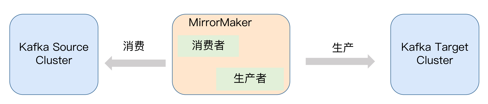
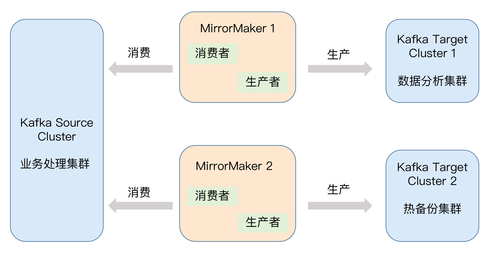
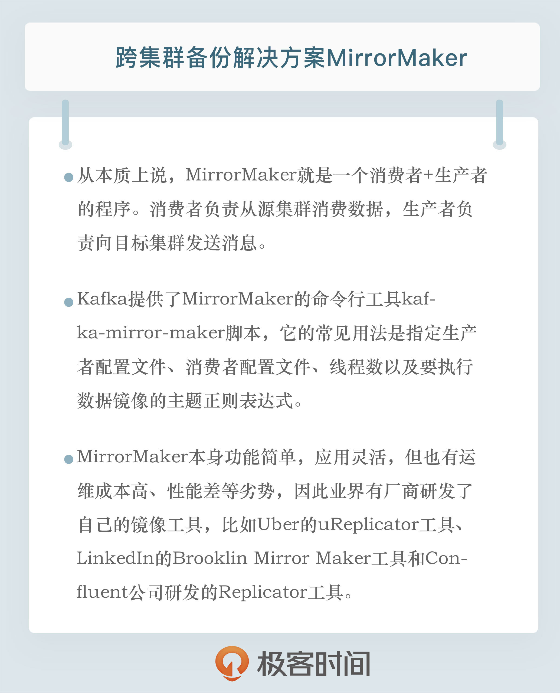

- 00 开篇词 为什么要学习Kafka？.md.html
- 01 消息引擎系统ABC.md.html
- 02 一篇文章带你快速搞定Kafka术语.md.html
- 03 Kafka只是消息引擎系统吗？.md.html
- 04 我应该选择哪种Kafka？.md.html
- 05 聊聊Kafka的版本号.md.html
- 06 Kafka线上集群部署方案怎么做？.md.html
- 07 最最最重要的集群参数配置（上）.md.html
- 08 最最最重要的集群参数配置（下）.md.html
- 09 生产者消息分区机制原理剖析.md.html
- 10 生产者压缩算法面面观.md.html
- 11 无消息丢失配置怎么实现？.md.html
- 12 客户端都有哪些不常见但是很高级的功能？.md.html
- 13 Java生产者是如何管理TCP连接的？.md.html
- 14 幂等生产者和事务生产者是一回事吗？.md.html
- 15 消费者组到底是什么？.md.html
- 16 揭开神秘的“位移主题”面纱.md.html
- 17 消费者组重平衡能避免吗？.md.html
- 18 Kafka中位移提交那些事儿.md.html
- 19 CommitFailedException异常怎么处理？.md.html
- 20 多线程开发消费者实例.md.html
- 21 Java 消费者是如何管理TCP连接的_.md.html
- 22 消费者组消费进度监控都怎么实现？.md.html
- 23 Kafka副本机制详解.md.html
- 24 请求是怎么被处理的？.md.html
- 25 消费者组重平衡全流程解析.md.html
- 26 你一定不能错过的Kafka控制器.md.html
- 27 关于高水位和Leader Epoch的讨论.md.html
- 28 主题管理知多少_.md.html
- 29 Kafka动态配置了解下？.md.html
- 30 怎么重设消费者组位移？.md.html
- 31 常见工具脚本大汇总.md.html
- 32 KafkaAdminClient：Kafka的运维利器.md.html
- 33 Kafka认证机制用哪家？.md.html
- 34 云环境下的授权该怎么做？.md.html
- 35 跨集群备份解决方案MirrorMaker.md.html
- 36 你应该怎么监控Kafka？.md.html
- 37 主流的Kafka监控框架.md.html
- 38 调优Kafka，你做到了吗？.md.html
- 39 从0搭建基于Kafka的企业级实时日志流处理平台.md.html
- 40 Kafka Streams与其他流处理平台的差异在哪里？.md.html
- 41 Kafka Streams DSL开发实例.md.html
- 42 Kafka Streams在金融领域的应用.md.html
- 加餐 搭建开发环境、阅读源码方法、经典学习资料大揭秘.md.html
- 用户故事 黄云：行百里者半九十.md.html
- 结束语 以梦为马，莫负韶华！.md.html
- 捐赠
35 跨集群备份解决方案MirrorMaker
你好，我是胡夕。今天我要和你分享的主题是：Kafka的跨集群数据镜像工具MirrorMaker。
一般情况下，我们会使用一套Kafka集群来完成业务，但有些场景确实会需要多套Kafka集群同时工作，比如为了便于实现灾难恢复，你可以在两个机房分别部署单独的Kafka集群。如果其中一个机房出现故障，你就能很容易地把流量打到另一个正常运转的机房下。再比如，你想为地理相近的客户提供低延时的消息服务，而你的主机房又离客户很远，这时你就可以在靠近客户的地方部署一套Kafka集群，让这套集群服务你的客户，从而提供低延时的服务。
如果要实现这些需求，除了部署多套Kafka集群之外，你还需要某种工具或框架，来帮助你实现数据在集群间的拷贝或镜像。
值得注意的是，通常我们把数据在单个集群下不同节点之间的拷贝称为备份，而把数据在集群间的拷贝称为镜像（Mirroring）。
今天，我来重点介绍一下Apache Kafka社区提供的MirrorMaker工具，它可以帮我们实现消息或数据从一个集群到另一个集群的拷贝。
什么是MirrorMaker？
从本质上说，MirrorMaker就是一个消费者+生产者的程序。消费者负责从源集群（Source Cluster）消费数据，生产者负责向目标集群（Target Cluster）发送消息。整个镜像流程如下图所示：

MirrorMaker连接的源集群和目标集群，会实时同步消息。当然，你不要认为你只能使用一套MirrorMaker来连接上下游集群。事实上，很多用户会部署多套集群，用于实现不同的目的。
我们来看看下面这张图。图中部署了三套集群：左边的源集群负责主要的业务处理；右上角的目标集群可以用于执行数据分析；而右下角的目标集群则充当源集群的热备份。

运行MirrorMaker
Kafka默认提供了MirrorMaker命令行工具kafka-mirror-maker脚本，它的常见用法是指定生产者配置文件、消费者配置文件、线程数以及要执行数据镜像的主题正则表达式。比如下面的这个命令，就是一个典型的MirrorMaker执行命令。
$ bin/kafka-mirror-maker.sh --consumer.config ./config/consumer.properties --producer.config ./config/producer.properties --num.streams 8 --whitelist ".*"
现在我来解释一下这条命令中各个参数的含义。
consumer.config参数。它指定了MirrorMaker中消费者的配置文件地址，最主要的配置项是bootstrap.servers，也就是该MirrorMaker从哪个Kafka集群读取消息。因为MirrorMaker有可能在内部创建多个消费者实例并使用消费者组机制，因此你还需要设置group.id参数。另外，我建议你额外配置auto.offset.reset=earliest，否则的话，MirrorMaker只会拷贝那些在它启动之后到达源集群的消息。
producer.config参数。它指定了MirrorMaker内部生产者组件的配置文件地址。通常来说，Kafka Java Producer很友好，你不需要配置太多参数。唯一的例外依然是bootstrap.servers，你必须显式地指定这个参数，配置拷贝的消息要发送到的目标集群。
num.streams参数。我个人觉得，这个参数的名字很容易给人造成误解。第一次看到这个参数名的时候，我一度以为MirrorMaker是用Kafka Streams组件实现的呢。其实并不是。这个参数就是告诉MirrorMaker要创建多少个KafkaConsumer实例。当然，它使用的是多线程的方案，即在后台创建并启动多个线程，每个线程维护专属的消费者实例。在实际使用时，你可以根据你的机器性能酌情设置多个线程。
whitelist参数。如命令所示，这个参数接收一个正则表达式。所有匹配该正则表达式的主题都会被自动地执行镜像。在这个命令中，我指定了“.*”，这表明我要同步源集群上的所有主题。
MirrorMaker配置实例
现在，我就在测试环境中为你演示一下MirrorMaker的使用方法。
演示的流程大致是这样的：首先，我们会启动两套Kafka集群，它们是单节点的伪集群，监听端口分别是9092和9093；之后，我们会启动MirrorMaker工具，实时地将9092集群上的消息同步镜像到9093集群上；最后，我们启动额外的消费者来验证消息是否拷贝成功。
第1步：启动两套Kafka集群
启动日志如下所示：
[2019-07-23 17:01:40,544] INFO Kafka version: 2.3.0 (org.apache.kafka.common.utils.AppInfoParser)- [2019-07-23 17:01:40,544] INFO Kafka commitId: fc1aaa116b661c8a (org.apache.kafka.common.utils.AppInfoParser)- [2019-07-23 17:01:40,544] INFO Kafka startTimeMs: 1563872500540 (org.apache.kafka.common.utils.AppInfoParser)- [2019-07-23 17:01:40,545] INFO [KafkaServer id=0] started (kafka.server.KafkaServer)
[2019-07-23 16:59:59,462] INFO Kafka version: 2.3.0 (org.apache.kafka.common.utils.AppInfoParser)- [2019-07-23 16:59:59,462] INFO Kafka commitId: fc1aaa116b661c8a (org.apache.kafka.common.utils.AppInfoParser)- [2019-07-23 16:59:59,462] INFO Kafka startTimeMs: 1563872399459 (org.apache.kafka.common.utils.AppInfoParser)- [2019-07-23 16:59:59,463] INFO [KafkaServer id=1] started (kafka.server.KafkaServer)
第2步：启动MirrorMaker工具
在启动MirrorMaker工具之前，我们必须准备好刚刚提过的Consumer配置文件和Producer配置文件。它们的内容分别如下：
consumer.properties：
bootstrap.servers=localhost:9092
group.id=mirrormaker
auto.offset.reset=earliest
producer.properties:
bootstrap.servers=localhost:9093
现在，我们来运行命令启动MirrorMaker工具。
$ bin/kafka-mirror-maker.sh --producer.config ../producer.config --consumer.config ../consumer.config --num.streams 4 --whitelist ".*"
WARNING: The default partition assignment strategy of the mirror maker will change from 'range' to 'roundrobin' in an upcoming release (so that better load balancing can be achieved). If you prefer to make this switch in advance of that release add the following to the corresponding config: 'partition.assignment.strategy=org.apache.kafka.clients.consumer.RoundRobinAssignor'
请你一定要仔细阅读这个命令输出中的警告信息。这个警告的意思是，在未来版本中，MirrorMaker内部消费者会使用轮询策略（Round-robin）来为消费者实例分配分区，现阶段使用的默认策略依然是基于范围的分区策略（Range）。Range策略的思想很朴素，它是将所有分区根据一定的顺序排列在一起，每个消费者依次顺序拿走各个分区。
Round-robin策略的推出时间要比Range策略晚。通常情况下，我们可以认为，社区推出的比较晚的分区分配策略会比之前的策略好。这里的好指的是能实现更均匀的分配效果。该警告信息的最后一部分内容提示我们，如果我们想提前“享用”轮询策略，需要手动地在consumer.properties文件中增加partition.assignment.strategy的设置。
第3步：验证消息是否拷贝成功
好了，启动MirrorMaker之后，我们可以向源集群发送并消费一些消息，然后验证是否所有的主题都能正确地同步到目标集群上。
假设我们在源集群上创建了一个4分区的主题test，随后使用kafka-producer-perf-test脚本模拟发送了500万条消息。现在，我们使用下面这两条命令来查询一下，目标Kafka集群上是否存在名为test的主题，并且成功地镜像了这些消息。
$ bin/kafka-run-class.sh kafka.tools.GetOffsetShell --broker-list localhost:9093 --topic test --time -2
test:0:0
$ bin/kafka-run-class.sh kafka.tools.GetOffsetShell --broker-list localhost:9093 --topic test --time -1
test:0:5000000
-1和-2分别表示获取某分区最新的位移和最早的位移，这两个位移值的差值就是这个分区当前的消息数，在这个例子中，差值是500万条。这说明主题test当前共写入了500万条消息。换句话说，MirrorMaker已经成功地把这500万条消息同步到了目标集群上。
讲到这里，你一定会觉得很奇怪吧，我们明明在源集群创建了一个4分区的主题，为什么到了目标集群，就变成单分区了呢？
原因很简单。MirrorMaker在执行消息镜像的过程中，如果发现要同步的主题在目标集群上不存在的话，它就会根据Broker端参数num.partitions和default.replication.factor的默认值，自动将主题创建出来。在这个例子中，我们在目标集群上没有创建过任何主题，因此，在镜像开始时，MirrorMaker自动创建了一个名为test的单分区单副本的主题。
在实际使用场景中，我推荐你提前把要同步的所有主题按照源集群上的规格在目标集群上等价地创建出来。否则，极有可能出现刚刚的这种情况，这会导致一些很严重的问题。比如原本在某个分区的消息同步到了目标集群以后，却位于其他的分区中。如果你的消息处理逻辑依赖于这样的分区映射，就必然会出现问题。
除了常规的Kafka主题之外，MirrorMaker默认还会同步内部主题，比如在专栏前面我们频繁提到的位移主题。MirrorMaker在镜像位移主题时，如果发现目标集群尚未创建该主题，它就会根据Broker端参数offsets.topic.num.partitions和offsets.topic.replication.factor的值来制定该主题的规格。默认配置是50个分区，每个分区3个副本。
在0.11.0.0版本之前，Kafka不会严格依照offsets.topic.replication.factor参数的值。这也就是说，如果你设置了该参数值为3，而当前存活的Broker数量少于3，位移主题依然能被成功创建，只是副本数取该参数值和存活Broker数之间的较小值。
这个缺陷在0.11.0.0版本被修复了，这就意味着，Kafka会严格遵守你设定的参数值，如果发现存活Broker数量小于参数值，就会直接抛出异常，告诉你主题创建失败。因此，在使用MirrorMaker时，你一定要确保这些配置都是合理的。
其他跨集群镜像方案
讲到这里，MirrorMaker的主要功能我就介绍完了。你大致可以感觉到执行MirrorMaker的命令是很简单的，而且它提供的功能很有限。实际上，它的运维成本也比较高，比如主题的管理就非常不便捷，同时也很难将其管道化。
基于这些原因，业界很多公司选择自己开发跨集群镜像工具。我来简单介绍几个。
1.Uber的uReplicator工具
Uber公司之前也是使用MirrorMaker的，但是在使用过程中，他们发现了一些明显的缺陷，比如MirrorMaker中的消费者使用的是消费者组的机制，这不可避免地会碰到很多Rebalance的问题。
为此，Uber自己研发了uReplicator。它使用Apache Helix作为集中式的主题分区管理组件，并且重写了消费者程序，来替换之前MirrorMaker下的消费者，使用Helix来管理分区的分配，从而避免了Rebalance的各种问题。
讲到这里，我个人有个小小的感慨：社区最近正在花大力气去优化消费者组机制，力求改善因Rebalance导致的各种场景，但其实，其他框架开发者反而是不用Group机制的。他们宁愿自己开发一套机制来维护分区分配的映射。这些都说明Kafka中的消费者组还是有很大的提升空间的。
另外，Uber专门写了一篇博客，详细说明了uReplicator的设计原理，并罗列了社区的MirrorMaker工具的一些缺陷以及uReplicator的应对方法。我建议你一定要读一读这篇博客。
2.LinkedIn开发的Brooklin Mirror Maker工具
针对现有MirrorMaker工具不易实现管道化的缺陷，这个工具进行了有针对性的改进，同时也对性能做了一些优化。目前，在LinkedIn公司，Brooklin Mirror Maker已经完全替代了社区版的MirrorMaker。如果你想深入了解它是如何做到的，我给你推荐一篇博客，你可以详细阅读一下。
3.Confluent公司研发的Replicator工具
这个工具提供的是企业级的跨集群镜像方案，是市面上已知的功能最为强大的工具，可以便捷地为你提供Kafka主题在不同集群间的迁移。除此之外，Replicator工具还能自动在目标集群上创建与源集群上配置一模一样的主题，极大地方便了运维管理。不过凡事有利就有弊，Replicator是要收费的。如果你所在的公司预算充足，而且你们关心数据在多个集群甚至是多个数据中心间的迁移质量，不妨关注一下Confluent公司的Replicator工具。
小结
好了，我们总结一下今天所讲的MirrorMaker。它是Apache Kafka社区提供的跨集群镜像解决方案，主要实现将Kafka消息实时从一个集群同步复制或镜像到另一个集群。你可以把MirrorMaker应用到很多实际的场景中，比如数据备份、主备集群等。MirrorMaker本身功能简单，应用灵活，但也有运维成本高、性能差等劣势，因此业界有厂商研发了自己的镜像工具。你可以根据自身的业务需求，选择合适的工具来帮助你完成跨集群的数据备份。

开放讨论
今天我只演示了MirrorMaker最基本的使用方法，即把消息原样搬移。如果我们想在消息被镜像前做一些处理，比如修改消息体内容，那么，我们应该如何实现呢？（提示：指定kafka-mirror-maker脚本的 –message.handler参数。）
欢迎写下你的思考和答案，我们一起讨论。如果你觉得有所收获，也欢迎把文章分享给你的朋友。
© 2019 - 2023 Liangliang Lee. Powered by gin and hexo-theme-book.